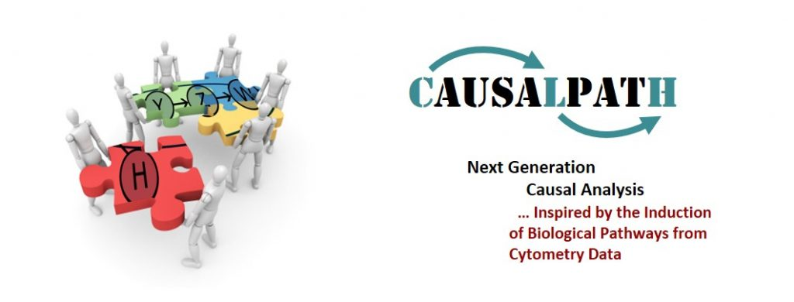

CAUSALPATH

Next Generation Causal Analysis
Historical project overview reproduced from the archived project homepage. The text describes the project at the time of publication.
CAUSALPATH is an ERC (European Research Council) Consolidator Grant awarded through the IDEAS programme for the research proposal titled ‘Next Generation Causal Analysis: Inspired by the Induction of Biological Pathways from Cytometry Data’.
CAUSALPATH aims to
- advance causal discovery theory, methods, and tools in directions that are practical, useful, robust, and accurate in real settings, thus creating a Next Generation Causal Analysis paradigm important to all data-analysis sciences and
- allow the accurate, efficient, personalized induction of formal, quantitative causal models of biological pathways from cytometry datasets coupled with other omics data and prior knowledge; the primary focus will be the pathways involved in the differentiation of human T-cells.
“We do not know a truth without knowing its cause”
— Aristotle, Metaphysica, 993b, 25–26
Funding
This project has received funding from the European Research Council (ERC) under the European Union’s Seventh Framework Programme (FP/2007–2013), grant agreement No 617393.
← Back to mens X machina